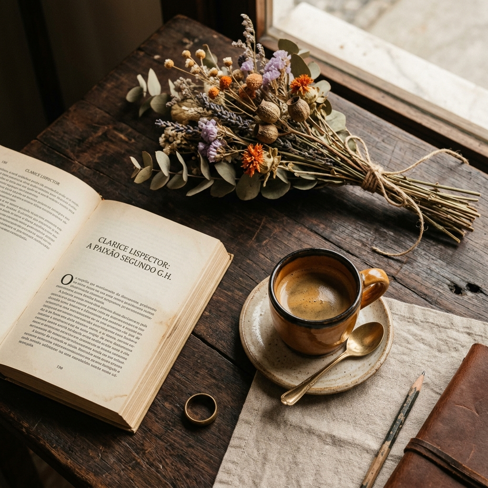
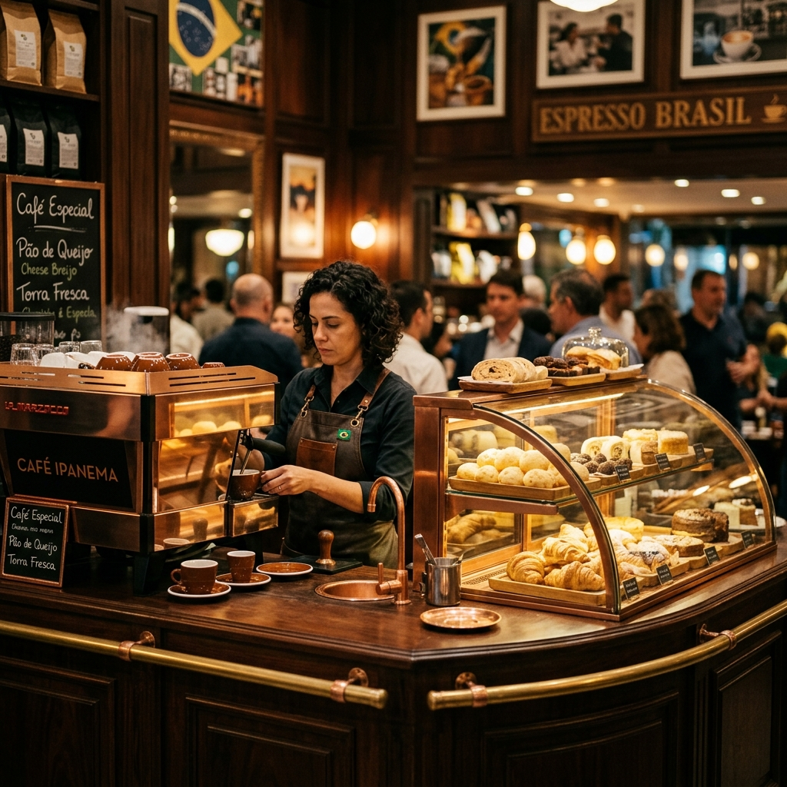
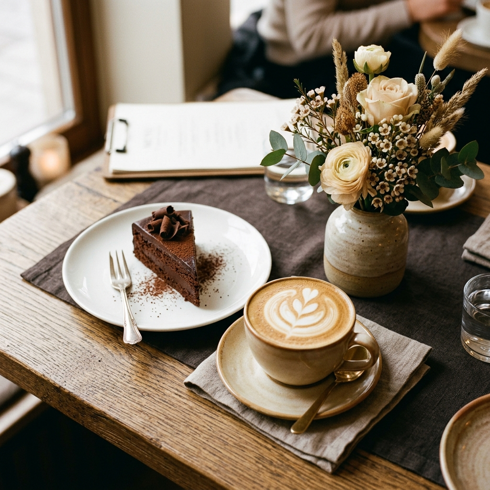
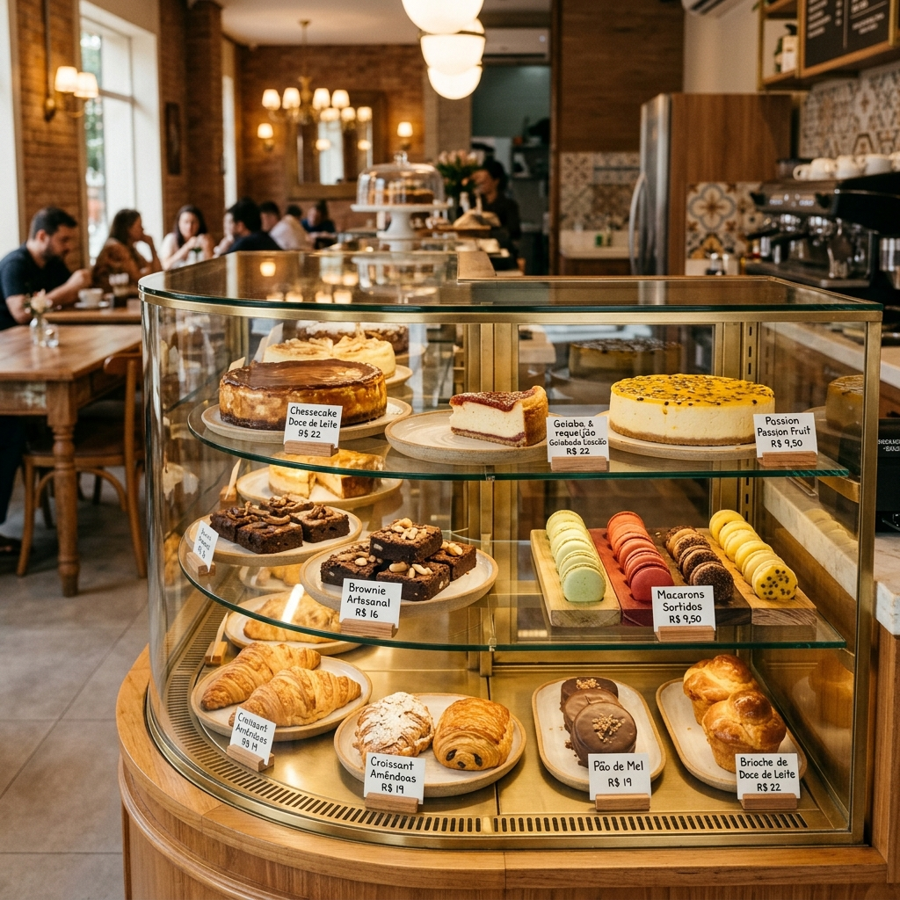

Onde o café
encontra a cultura.
No coração do Teatro da Univates, uma pausa que vale o ato. Café de qualidade, ambiente acolhedor e a energia única de um espaço cultural.

Uma cafeteria dentro de um espaço que respira cultura
A Cafeteria do Teatro nasceu com um propósito simples e bonito: ser o lugar certo para antes do espetáculo, depois da aula, no intervalo do ensaio ou em qualquer momento que peça uma boa xícara de café.
Localizada no Teatro da Univates, em Lajeado/RS, nossa cafeteria é parte do cenário cultural da cidade. Aqui o tempo desacelera — entre livros, conversas, música e o aroma do café recém-preparado.
Seja para estudar em silêncio, reencontrar uma amizade ou simplesmente existir com mais presença, a Cafeteria do Teatro é o seu lugar.
Café de verdade
Grãos selecionados, preparo com cuidado e aquele aroma que muda o humor.
Dentro do Teatro da Univates
Integrada a um espaço vivo, plural e cheio de criatividade em Lajeado.
Ambiente acolhedor
Pensado para você ficar à vontade — sozinho ou em boa companhia.
Três razões para vir nos visitar
Cada visita à Cafeteria do Teatro é uma pausa com propósito — onde o café importa tanto quanto o espaço ao redor.
Café com cuidado
Do espresso clássico ao cappuccino cremoso, cada bebida é preparada com atenção e carinho. Café não é só bebida — é um ritual.
Atmosfera cultural
Instalada no Teatro da Univates, respiramos arte e criatividade. O ambiente inspira conversas mais ricas, pausas mais significativas.
Encontros que ficam
Seja para estudar, trabalhar, namorar ou simplesmente descansar, a Cafeteria do Teatro é o cenário perfeito para os seus encontros.
Cada detalhe tem seu charme
Fotos de ambiente, balcão, café e momentos da nossa cafeteria.



Quando estamos aqui para você
Venha nos visitar! Estamos abertos tarde e noite para acompanhar os espetáculos do Teatro da Univates.
Aberto para tarde e noite
Encerramento mais cedo
⚠️ Horários sujeitos à programação do Teatro. Acompanhe nossas redes para atualizações.
Dentro do Teatro da Univates
Estamos no coração do campus da Univates, em Lajeado/RS. Fácil de acessar, difícil de querer sair.
Endereço
Teatro da Univates
Rua Avelino Tallini, 171 — Universitário
Lajeado, RS · CEP 95914-014
Horário de funcionamento
Seg–Qui: 14h30 às 22h · Sex: 14h30 às 20h
Explore o que preparamos
para você.
Cafés, bebidas geladas, doces artesanais, salgados e combos. Tudo pensado para tornar sua visita mais especial.